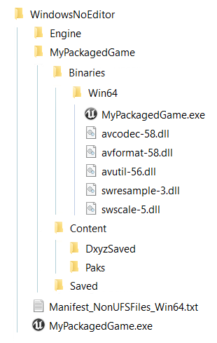
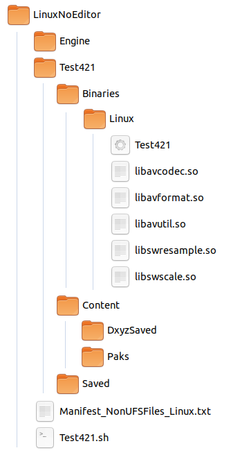

Packaging¶
In order to package your game with our plugin, please ensure that you are using our plugin as an Engine Plugin. For more information, please consult sections Setup as an engine plugin and Switching from one mode to the other.
Packaging our project is straightforward and should not deviate from the steps given on the official Unreal documentation: Packaging your Unreal Project
If you want to modify the Sources or the Remapping Assets without re-shipping your project, please check the Modifying Dynamixyz Live Link Plugin configuration in a shipped project section.
Our plugin is designed to compile on all build type (Shipping, Development, Debug).
Warning
During the packaging, the plugin will copy the folder DxyzSaved which contains the configuration of the sources and the retargeting of your project in the packaged game folder. The third party libraries should also be copied. However, those files sometimes won’t be copied. In the next session, we will explain where to manually copy them if needed.
What do I do if my packaged game won’t run¶
On Windows 64-bit¶
Fatal error / Missing binaries
If the application does not open, it may be a binaries issue. In this case you will need to copy the third party binaries manually.
Go to the installation folder of Unreal Engine, in the version you are currently using. Look for the DxyzLiveLinkPlugin installation folder in the Engine plugins (something like C:/Program Files/Epic Games/UE_4.21/Engine/Plugins/Marketplace/DxyzLiveLinkPlugin)
Go to the ThirdParty folder, and for each library, copy the win64 binaries (*.dll) next to the application executable in <PackagedFolder>/WindowsNoEditor/<PackagedName>/Binaries/Win64/.
Restart your application
Note
In DxyzLiveLinkPlugin v1.2.0, only ffmpeg is used as a third party library.
My character is not animated
It can be that the configuration files were not copied. You will need to copy them manually.
Go to your project folder and in the Content folder, look for the DxyzSaved folder. It contains a few *.dxyz files.
Copy the DxyzSaved folder in the Content folder of your packaged project : <PackagedFolder>/WindowsNoEditor/<PackagedName>/Content/.
Restart your application
Note
This is how a functional packaged project should look on Win64 :

On Linux 64-bit¶
Fatal error / Missing binaries
If the application does not open, it may be a binaries issue. In this case you will need to copy the third party binaries manually.
Go to the DxyzLiveLinkPlugin folder.
Go to the ThirdParty folder, and for each library, copy the lin64 binaries (*.so) next to the application executable in <PackagedFolder>/LinuxNoEditor/<PackagedName>/Binaries/Linux/.
Restart your application
Note
In DxyzLiveLinkPlugin v1.2.0, only ffmpeg is used as a third party library.
My character is not animated
It can be that the configuration files were not copied. You will need to copy them manually.
Go to your project folder and in the Content folder, look for the DxyzSaved folder. It contains a few *.dxyz files.
Copy the DxyzSaved folder in the Content folder of your packaged project : <PackagedFolder>/LinuxNoEditor/<PackagedName>/Content/.
Restart your application
Note
This is how a functional packaged project should look on Linux :

On MacOS¶
Fatal error / Missing binaries
If the application does not open, it may be a binaries issue. In this case you will need to copy the third party binaries manually.
Go to the installation folder of Unreal Engine, in the version you are currently using. Look for the DxyzLiveLinkPlugin installation folder in the Engine plugins (something like Users/Shared/Epic Games/UE_4.21/Engine/Plugins/Marketplace/DxyzLiveLinkPlugin)
Go to the ThirdParty folder, and for each library, copy the macOS binaries (*.dylib) next to the application executable : Go to <PackagedFolder>/MacNoEditor/<PackagedName>, right-click on the <PackagedName> and select “Show Package content”, then go in the Contents/MacOS/. Copy here the libraries.
Restart your application
Note
In DxyzLiveLinkPlugin v1.2.0, only ffmpeg is used as a third party library.
My character is not animated
It can be that the configuration files were not copied. You will need to copy them manually.
Go to your project folder and in the Content folder, look for the DxyzSaved folder. It contains a few *.dxyz files.
Copy the DxyzSaved folder in the Content folder of your packaged project : Go to <PackagedFolder>/MacNoEditor/<PackagedName>, right-click on the <PackagedName> and select “Show Package content”, then go in the Contents/UE4/<PackagedName>/Content/. Copy here the DxyzSaved folder.
Restart your application
{kind=link}
Still not able to run your packaged project ?¶
Contact us at support@dynamixyz.com.